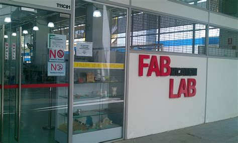

<!-- Home, Back using Javascript -->
<div>
<form>
<input type="button" value="Home" onclick="window.location.href='/ep1000digfab/index.html'">
<input type="button" value="Back" onclick="history.back()">
</form>
</div>
<div style="height:2em"></div>
<!-- Remember to change the title of the page -->
# HTML & CSS
This section looks at developing a static website using HTML and CSS. This is essential development of any website/webpage as all pages are finally rendered using HTML and formatted accordingly using CSS.
It is important for any developer to understand the basics of HTML and CSS.
## HTML
[Presentation - HTML](ep1000_html.pdf)
**Hypertext Markup Language** (HTML or HTM) is the standard markup language for documents to be displayed on a web browser. A markup language annotates a text document such that it is distinguishable from normal text so that when the document is processed for display, the markup is used for the formatting and does not change the text content.
For example:
> This part of the text is &lt;b&gt;bold&lt;/b&gt; as compared to normal.
will produce
> This part of the text is <b>bold</b> as compared to normal.
the tags &lt;b&gt; and &lt;/b&gt; cause the formatting (or marks up the text).
There is quite a lot to learn if one is to be proficient in HTML or HTML5 (the current standard) however, for this course, it would be sufficient to be knowledgeable in the basics. Hence, we will adopt a just-in-time learning approach and proceed to the reference sections should we need to develop more expertise in a particular area.
This is the [basic outline of a HTML file](https://www.w3schools.com/html/html_basic.asp) that displays a
- Title - "My First Webpage"
- Body
- the main content of the page, and within it
- Headings which highlight titles, sections or headings
- Paragraphs of text
- Un-ordered list of items
- an image (resized) which is loaded together with the page
- and links to other sites
### Basic Structure
```
<!DOCTYPE html>
<html>
<head>
<title>My First Web Page</title>
</head>
<body>
<h1>Welcome to my first web page!</h1>
<p>This is a paragraph. It is just some text written without regard
to the use of whitespace, as HTML ignores spaces, tabs and newlines.</p>
<p>Sometimes we would want to have un-ordered lists of items, also known as,
bullet points. Some of the list items are links to other sites..</p>
<ul>
<li>Web Servers and hosting services</li>
<li><a href="atom.io">Atom Text Editor</a></li>
<li><a href="www.google.com">Google Search</a></li>
</ul>
<h2>About us</h2>
<p>You can also imbed images in a web-page, here is a nice pictures
of the Fablab in SP</p>

<p>I hope you enjoy the facilities here!</p>
</body>
</html>
```
If you use this link: [My First Webpage](myfirstwebpage.html) you will be able to see how it renders on a web browser.
## HTML the language of the web
[HTML](https://en.wikipedia.org/wiki/HTML) (**H**yper**T**ext **M**arkup **L**anguage) describes how the information is to be displayed in a web browser.
Watch: [How a web browser builds and displays a web page](https://youtu.be/DuSURHrZG6I)
In order make available information on the www, you need the following
- A web Server or Service (e.g. github.com)
- A web page written in HTML (e.g. (mypage.html)
- A web browser at the client (e.g. [Google Chrome](https://www.google.com/chrome/index.html))
Web pages are developed using
- [HTML](https://en.wikipedia.org/wiki/HTML) to create and present information
- [CSS](https://www.w3.org/Style/CSS/Overview.en.html) (Cascading Style Sheets) to format the information into a uniform, consistent and pleasing nature
- Scripting (e.g. [Javascript](https://www.javascript.com/)) to add dynamic content to the information.
A Static web page is built using HTML (and CSS) and has the same content and presentation regardless of the user identity or other factors. Static web pages are easy to code and do not change when the page is displayed.
A Dynamic web page is built using HTML and a scripting language which interacts with the remote server each time the page is loaded. When the page is called the scripting language sends a request to the web/database server loading fresh content which may change with time and situation.
Static web pages are great for information presentation that does not need to change with time and are easier to code. Dynamic web pages are more difficult to implement, however, you only need to change the data for the page to change.
### Learning HTML & CSS
There are many good HTML and CSS tutorials on the web as well as books. The time taken to cover this topic (alone) would consume a whole term. Hence, my recommendation is that
1. Start with Mozilla's [Learn Web Development](https://developer.mozilla.org/en-US/docs/Learn) covering the following topics
- Getting started with the web
- Introduction to HTML
- Multimedia and embedding
- HTML tables
- CSS First Steps
- CSS Building blocks
- Styling text
- CSS Layout
2. Use the reference sites from [w3schools](https://www.w3schools.com/) for further information and development
- [HTML tutorial](https://www.w3schools.com/html/default.asp)
- [CSS tutorial](https://www.w3schools.com/css/default.asp)
You could watch the following videos as a start as well:
- Jake Wright's videos
- [Learn HTML is 12 minutes](https://youtu.be/bWPMSSsVdPk)
- [Learn More HTML in 12 Minutes](https://youtu.be/KJ13lX20FqU)
- Traversy Media [HTML Crash Course for Absolute Beginners](https://youtu.be/UB1O30fR-EE)
- Clever Programmer [HTML Crash Course for Absolute Beginners 2020](https://youtu.be/FNGoExJlLQY) which may appeal to younger viewers!
### Ex1 Basic HTML page
With your current knowledge of HTML, build the following webpage:

This page tests your knowledge on the following HTML concepts:
- Basic HTML page design
- Headers, paragraphs, text formatting
- Tables
- Images
- Hypertext links
- Use the &lt;div&gt; to divide the page in sections
- Use a single folder to hold the html file, use a sub-folder to hold the images
## CSS
[Presentation - CSS](ep1000_css.pdf)
Cascading Style Sheets (CSS) is the language used to style the web pages.
- CSS describes how HTML elements are to be displayed on screen, paper, or in other media.
- CSS saves a lot of work. It can control the layout of multiple web pages all at once
- Styles can be saved in external files and applied to HTML pages.
### Worked Tutorial
A simple and fast tutorial is to work through a project.
1. Watch [Youtube: Jake Wright: Learn CSS in 12 minutes](https://youtu.be/0afZj1G0BIE), in its entirety giving an overview of what you about to learn.
2. Re-watch the video, this time taking short notes.
3. Develop the website as shown in the video and test it out.
Here is how the Jake Wright's Site would look after completion: [Jake Wright Site](JW/index.html)
You can find more information regarding CSS on the following sites:
- [W3Schools CSS Tutorial](https://www.w3schools.com/css/default.asp)
- [TutorialsPoint Learn CSS](https://www.tutorialspoint.com/css/index.htm)
### Ex2 Website Template
Using Jake Wright's CSS site as a template, modify the necessary HTML and CSS files to create your own site with the following requirements:
1. Your site needs at least 4 sections
- **Home** describes the site and its purpose, giving contents
- **About** describes yourself, similar to Ex1
- **Blog** a page which has links to your weekly work (each week's work can be on a separate page)
- **Final Project** a page which describes how you built your final project
2. You will need to create your own stylesheet with
- a suitable color scheme
- navigation to other pages
- formatting
- size your pages to at least 1024 pixels wide
3. Create a template page so that you can add new pages easily. Document this as part of your weekly work in the Blog section.
Here is an example of [modifying Jake Wright's Site](JWmod/index.html). You can use this as a template for your own project site.
You can find some [short notes](JWmodification.html) on how to use and apply the pages for your project. The modified version uses a folder structure to hold the different files and projects.
<!-- Home, Back using Javascript -->
<div style="height:2em"></div>
<div>
<form>
<input type="button" value="Home" onclick="window.location.href='/ep1000digfab/index.html'">
<input type="button" value="Back" onclick="history.back()">
</form>
</div>
<!--End of markdown area-->